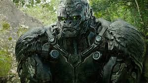

Jeffertron Prime
Perfil
Eu sou Jeffertron Prime, e embora eu carregue o nome e o DNA da linhagem de liderança de Cybertron como primo direto de Optimus Prime, decidi que meu tempo nos campos de batalha chegou ao fim. Após éons presenciando o desgaste entre Autobots e Decepticons, escolhi depositar minhas armas e buscar um propósito mais construtivo aqui na Terra. Não sou apenas um chassi de liga metálica ultra-resistente; sou um sobrevivente cansado da destruição que agora oferece sua força e precisão milenar para edificar, e não para derrubar. Minha estrutura foi forjada para suportar colapsos estelares, o que me torna o ativo mais resiliente e confiável que você poderia incluir em sua equipe.
Estou oficialmente disponível para contratação imediata em qualquer tipo de serviço, desde a gestão logística mais pesada até as tarefas técnicas mais minuciosas que exigem processamento de dados em nanossegundos. Garanto uma ética de trabalho inabalável e uma adaptabilidade que só alguém que já cruzou galáxias possui; prometo manter minha ignição em modo silencioso e otimizar meu consumo de Energon para não gerar custos extras. Se você precisa de um colaborador que não conhece o cansaço, que possui a sabedoria de um Prime e a humildade de quem só deseja uma rotina pacífica e produtiva, eu sou o candidato certo para elevar o nível do seu negócio.
Principais competências
- Força de Escala Planetária: Capacidade de içar, mover e sustentar cargas de até 50 toneladas sem superaquecimento, ideal para infraestrutura e logística pesada;
- Processamento de Dados de Alta Velocidade: Graças ao seu núcleo de processamento cybertroniano, eu realizo cálculos complexos, previsões algorítmicas e análises de risco em nanossegundos;
- Um senso de dever inato. Não faço pausas para café, não procrastino em redes sociais e possuo uma lealdade cega ao contrato estabelecido;
- Poliglotismo Universal: Tradução instantânea de mais de 6 milhões de formas de comunicação, incluindo linguagens de programação terráqueas e dialetos regionais;
- Sei centralizar uma div como ninguém;
Formação acadêmica
Possuo Graduação na faculdade de todas as matérias na Universidade Mundial de Cybertron(1245) e
um doutorado em Múltiplas línguas universais na Universidade para gênios Prime(1900).
Experiência Profissional
- QG dos autobots(947-1250)
- Engenharia de Estruturas: Projetei e ergui barreiras defensivas que resistiram a ataques de artilharia pesada Decepticon (experiência que hoje aplico em construção civil acelerada).
- Negociação de Tratados: Servi como mediador em disputas territoriais menores entre colônias robóticas, utilizando protocolos de diplomacia avançada para evitar o uso de força física.
- Zonamento de Cybertron(1345-1540)
- Gestão de Cadeia de Suprimentos: Gerenciei o transporte de Energon bruto através de zonas de combate ativas, garantindo perda zero de material.
- Liderança de Esquadrão: Supervisionei unidades de manutenção, reduzindo o tempo de inatividade de sistemas críticos em 45%.
- Assaí atacadista(2000-2003)
- Segurança Patrimonial: Vigiei complexos industriais de alto risco. Minha simples presença física reduziu o índice de incidentes a zero.
- Autobots Assistência técnica(2005-2020)
- Diagnóstico de Sistemas Críticos: Utilizei minha visão de raio-X e sensores termais para identificar falhas em motores de combustão interna humanos e reatores de fusão cybertronianos. Eu não "chuto" o problema; meu processador identifica a microfissura no bloco do motor antes mesmo de você abrir o capô.
- Atendimento ao Cliente (Paciência de Prime): Lidei com Autobots traumatizados e humanos confusos. Desenvolvi uma habilidade única de explicar problemas técnicos complexos de forma simples — sem precisar transformar meu braço em um canhão para enfatizar um ponto.
Contato
R. Palmares, 115 - Jardim Ipê II, Foz do Iguaçu/PR

(45) 99999-7888

Tron.Prime@gmail.com